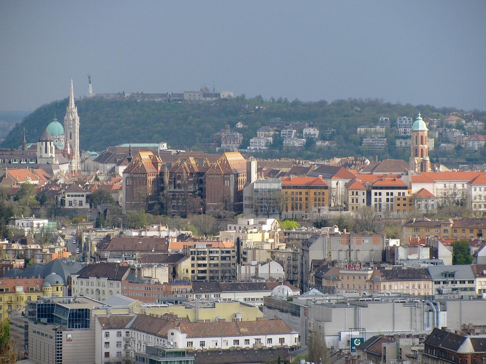

Régi épületek és az óriási energiaigény
Nagyon sok budapesti lakás még a múlt századból származik. Ezeket nem szigetelték rendesen, és sokszor régi kazánokat használnak. Ez azt jelenti, hogy rengeteg energiát kell elhasználni ahhoz, hogy egyáltalán meleg legyen a lakásban. Ha korszerűsítenék ezeket az épületeket (szigetelés, nyílászárók, fűtésrendszer), sokkal kevesebb energiát pazarolnánk el.
